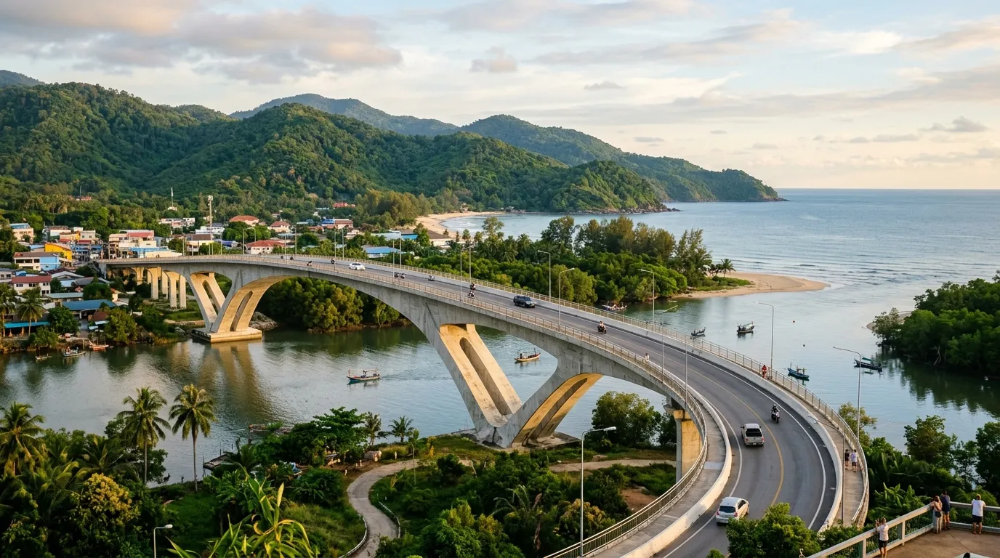

Di tengah hiruk-pikuk kehidupan yang serba cepat, banyak orang mencari tempat untuk sekadar melepas penat tanpa harus berdesakan dengan wisatawan lain. Jika Anda salah satunya, Pantai Bajulmati bisa jadi jawabannya. Sebagai salah satu pantai sepi Malang yang masih menyimpan suasana asri dan tenang, Bajulmati menawarkan kombinasi sempurna antara pemandangan laut biru, hamparan pasir lembut, dan program konservasi penyu yang jarang ditemukan di pantai lain.
Berikut ulasan lengkap seputar wisata Bajulmati yang wajib Anda ketahui sebelum berkunjung.
Pantai Bajulmati menawarkan kombinasi sempurna antara suasana tenang untuk healing, program konservasi penyu yang unik, dan jembatan ikonik yang menjadi gerbang menuju ketenangan pantai selatan Jawa.
Sekilas Tentang Pantai Bajulmati
Pantai Bajulmati terletak di Desa Gajahrejo, Kecamatan Gedangan, Kabupaten Malang, Jawa Timur, sekitar 58 km dari pusat Kota Malang. Rute menuju lokasi bisa ditempuh melalui Turen, kemudian menuju Sumbermanjing Wetan, dan dilanjutkan ke arah Sendangbiru mengikuti papan petunjuk jalan. Akses jalannya sudah cukup mulus, sehingga memudahkan perjalanan bagi wisatawan yang membawa kendaraan pribadi.
Nama "Bajulmati" sendiri memiliki cerita tersendiri. Konon, nama ini berasal dari penemuan seekor buaya atau "bajul" di pinggir pantai pada masa lampau. Kisah ini semakin diperkuat dengan keberadaan salah satu formasi karang besar di kawasan pantai yang bentuknya menyerupai buaya, menjadikan nama tersebut melekat hingga sekarang.
Suasana Tenang, Cocok untuk Healing
Dibandingkan beberapa pantai populer lain di Malang Selatan yang kerap dipadati wisatawan saat akhir pekan, Bajulmati masih relatif lebih sepi dan tenang. Garis pantainya membentang sepanjang sekitar 1 kilometer, cukup luas untuk dijelajahi tanpa harus berdesakan dengan pengunjung lain.
Suasana inilah yang membuat Bajulmati banyak direkomendasikan sebagai destinasi healing, tempat wisatawan bisa berjalan santai menyusuri bibir pantai tanpa alas kaki, merasakan pasir lembut, sekaligus menikmati semilir angin laut yang menenangkan pikiran. Rimbunnya pepohonan di sekitar kawasan pantai turut menambah kesan asri dan sejuk, jauh dari kesan pantai yang gersang.
Bagi yang ingin merasakan momen yang lebih syahdu, berkemah di Bajulmati sambil menikmati langit malam bertabur bintang dan suara deburan ombak menjadi pengalaman yang sulit dilupakan.
Konservasi Penyu, Daya Tarik Khas Bajulmati
Salah satu hal yang membuat Pantai Bajulmati begitu istimewa dibanding pantai lain di Malang adalah keberadaan program konservasi penyu yang dikenal dengan nama Bajulmati Sea Turtle Conservation (BSTC). Di kawasan ini, terdapat puluhan indukan penyu yang dirawat dan dilestarikan oleh warga serta pengelola setempat.
Wisatawan yang beruntung bisa menyaksikan langsung momen pelepasan tukik atau anak penyu ke laut lepas, sebuah pengalaman edukatif sekaligus emosional yang jarang ditemukan di destinasi pantai lain. Kehadiran program konservasi ini juga menjadikan Bajulmati sebagai destinasi ekowisata yang mengedepankan pelestarian alam, sejalan dengan tren wisata berkelanjutan yang semakin diminati saat ini.

Ikon Jembatan Bajulmati
Sebelum tiba di kawasan pantai, pengunjung akan melewati Jembatan Bajulmati, sebuah jembatan lengkung sepanjang sekitar 90 meter dengan desain artistik yang menjadi ikon sekaligus gerbang menuju lokasi wisata. Jembatan ini membentang di atas muara sungai yang berpadu dengan pemandangan perbukitan dan laut lepas di kejauhan.
Tak heran jika jembatan ini menjadi salah satu spot foto favorit wisatawan sebelum melanjutkan perjalanan ke bibir pantai. Desain lengkungnya yang unik membuat jembatan ini kerap dijadikan latar foto, baik untuk dokumentasi pribadi maupun konten media sosial.
Aktivitas Seru di Pantai Bajulmati
Meski dikenal sebagai pantai yang tenang, Bajulmati tetap menawarkan berbagai aktivitas menarik, di antaranya:
- Bermain di area muara. Berbeda dari laut lepas yang memiliki ombak besar dan kurang aman untuk berenang, area muara di sekitar pantai memiliki air yang lebih tenang sehingga cocok untuk bermain air, berenang, atau bermain kayak.
- Olahraga pantai. Garis pantai yang luas dan pasirnya yang padat membuat kawasan ini nyaman untuk bermain sepak bola maupun voli pantai bersama teman atau keluarga.
- Menyaksikan pelepasan penyu. Momen ini menjadi daya tarik utama yang membedakan Bajulmati dari pantai lain di Malang Selatan.
- Berkemah di tepi pantai. Cocok bagi yang ingin menikmati suasana malam yang tenang jauh dari keramaian kota.
- Berburu foto di Jembatan Bajulmati. Spot ikonik ini sayang untuk dilewatkan sebelum memasuki kawasan pantai.
Harga Tiket Masuk dan Jam Operasional
Berikut rincian biaya terbaru yang perlu Anda siapkan:
Pantai ini buka selama 24 jam tanpa jadwal buka-tutup tertentu, sehingga wisatawan bisa berkunjung kapan saja sesuai kebutuhan, baik untuk wisata harian maupun bermalam.
Catatan: Harga tiket dan jam operasional sewaktu-waktu bisa berubah mengikuti kebijakan pengelola setempat, sehingga disarankan untuk mengecek informasi terbaru melalui media sosial resmi pengelola sebelum berangkat.
Tips Berkunjung ke Pantai Bajulmati
- Hindari berenang di laut lepas karena ombaknya cukup besar; area muara jauh lebih aman untuk bermain air.
- Datang di pagi atau sore hari untuk suasana yang lebih nyaman dan pencahayaan foto yang lebih bagus.
- Bawa perlengkapan camping sendiri jika berencana bermalam menikmati suasana malam di pantai.
- Jaga kebersihan area konservasi penyu dan ikuti arahan petugas jika berkesempatan menyaksikan pelepasan tukik.
- Siapkan kamera untuk mengabadikan momen di Jembatan Bajulmati sebelum memasuki kawasan pantai.
- Cek info terbaru seputar tiket dan jam operasional melalui media sosial resmi pengelola sebelum berangkat.
Kesimpulan
Bagi yang mencari wisata Bajulmati sebagai tempat healing dari rutinitas sehari-hari, pantai ini menawarkan hampir semua yang dibutuhkan: suasana tenang, pemandangan alam yang asri, jembatan ikonik yang instagramable, hingga pengalaman unik menyaksikan konservasi penyu. Sebagai salah satu pantai sepi Malang yang belum terlalu ramai dikunjungi wisatawan, Bajulmati menjadi pilihan tepat bagi siapa saja yang ingin menikmati ketenangan pantai selatan Jawa tanpa perlu berdesakan dengan keramaian.
Catatan: Harga tiket, biaya parkir, dan kebijakan pengelolaan Pantai Bajulmati dapat berubah sewaktu-waktu. Disarankan untuk mengecek informasi terbaru sebelum berangkat.